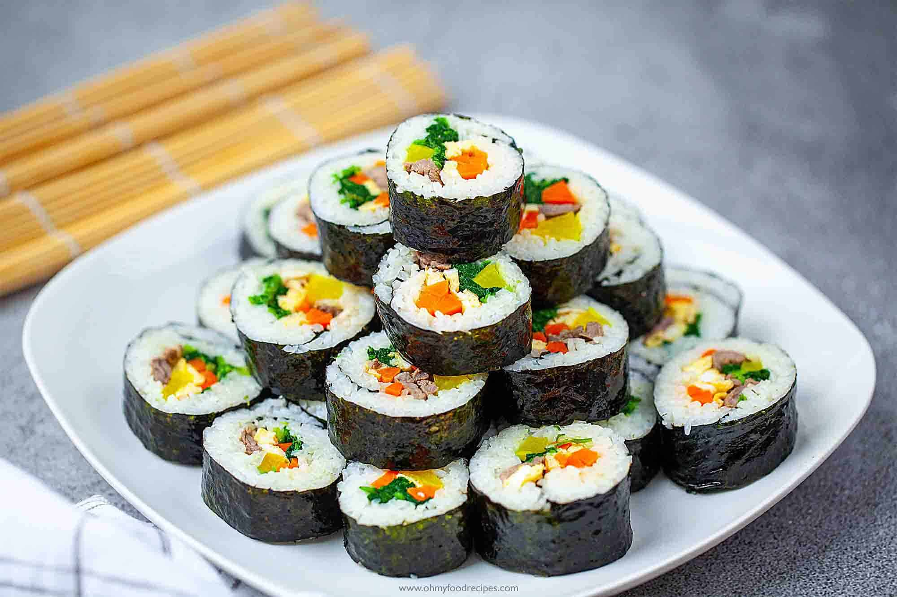

Gimbap Recipe

Description
Gimbap/Kimbap is a popular Korean style sushi rolls.
Ingredients
- 4 dried seaweed wrapper (gim/sushi nori)
- 120g / 4.2 ounces spinach (regular or baby spinach)
- 1/2 carrot (120g / 4.2 ounces), julienned
- 2 to 4 imitation crab sticks, cut in half length ways
- 4 sticks of BBQ kimbap ham, cut into long strips
- 4 yellow radish pickle, cut into long strips
- 2 1/2 cups cooked short grain rice
- 2 Tbsp sesame oil, divided
- 3/8 tsp fine sea salt (or more to taste), divided